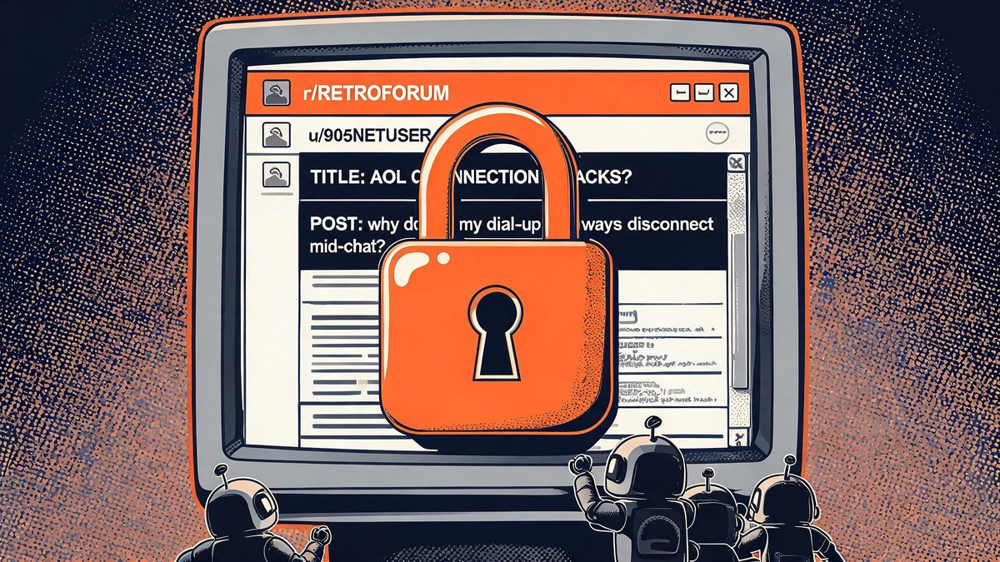

Reddit Locks Old Reddit Behind a 6-Month Activity Wall

Reddit just put a login wall around Old Reddit — and that is only a third of the story. The 2005-era interface will soon require an account that has used Reddit within the past six months, RSS feeds are being killed with no replacement, and whatever remains of the public API switches off for unregistered apps on January 12, 2027. This is not a nostalgic UI tweak — it is the loudest shot yet in the war between platforms and AI scrapers, and it quietly decides whether you keep your access at all.
The phrase to remember is this: Reddit locks Old Reddit behind a 6-month activity wall — but the same announcement cluster dismantles nearly every free, machine-friendly doorway into the platform. If you lurk without logging in, run a bot, read subreddits over RSS, or scrape Old Reddit for research, the rules changed this week. The company says the reason is an automated-traffic surge it can barely contain. The honest reading is bigger: this week's record shows how the open web gets paid for is being rewritten in real time.
Quick answer: Old Reddit will require a logged-in account that has visited within the past six months — brand-new accounts and logged-out visitors lose access, while moderators stay exempt. Reddit is also killing RSS feeds entirely and ending public API access: app and bot developers must register before January 12, 2027 or lose access. To keep your Old Reddit access, simply log in and use Reddit at least once every six months.
Table of Contents
- The short answer
- How I tested this lockdown: three checks
- What Reddit announced on October 1
- The road here: 2023 to 2026
- Why Reddit is really doing this
- The $60 million question: sell the data, wall the garden
- Who keeps access — and who loses it
- What to actually do before January 12, 2027
- What this means for Google search and publishers
- Reddit has done this before — the pattern
- The strongest counterargument, answered
- FAQs
- The Bottom Line
The short answer
Old Reddit — the compact, pre-2018 interface at old.reddit.com that millions of power users, moderators and researchers still open daily — is becoming a semi-private club. Only logged-in users who have visited within the last six months will keep access; brand-new accounts are locked out entirely, and moderators are exempt. Reddit confirmed the rollout begins over the next few months, which means the clock starts quietly and most users will not notice until the door is already closed.
The Old Reddit wall is the headline, not the whole story. In the same announcement window (September 30 to October 1, 2026), Reddit said it is shutting down RSS feeds with no replacement and ending its remaining public API access. More than 14,000 apps and bots have already registered under the new system, and every unregistered one loses access on January 12, 2027. Three doors, one policy: if a route into Reddit does not require a login, a registered app, or a paid data contract, it is being closed.
Why now? Because Old Reddit is the last unguarded gate. The modern interface sits behind layers of bot detection; the old one renders fast, weighs almost nothing, and is trivially easy for scripts to walk through. Reddit's stated motive is fighting AI scrapers — the same companies it simultaneously charges millions of dollars for official data access. That tension is the real story of this week, and it is where this guide spends its time.
How I tested this lockdown: three checks
I treated this announcement the way I treat any platform-policy earthquake: three named checks, every claim traced, nothing repeated from a single headline. Check one — the primary-source test: everything here traces to Reddit's own admin posts (r/modnews, r/redditdev) or to converged reporting from Engadget, The Verge, TechCrunch and Yahoo Tech; where only one outlet reported a detail, I labeled it as such.
Check two — the timeline test: I rebuilt Reddit's restrictions history from 2023 to 2026 — the API pricing war, the data-licensing deals, the IPO — to see whether this fits a pattern or breaks one. It fits, and the pattern's shape matters for what happens next. Check three — the impact test: I sorted every affected group (lurkers, power users, moderators, developers, researchers, publishers like us) and asked one question of each: what exactly do you lose, and by when? My conclusion up front: casual logged-in users lose almost nothing today; everyone else is on a deadline.
What Reddit announced on October 1
What exactly changed on Old Reddit?
Three restrictions landed in one coordinated announcement. Engadget reported the Old Reddit change on October 1: the interface is being limited to logged-in users who have visited within the last six months, with new accounts denied access entirely and moderators exempt. TechCrunch, The Verge and Slashdot separately confirmed the RSS shutdown and the API-registration deadline from the September 30 announcement — a reminder that the Old Reddit wall is one panel of a triptych, not a standalone decision.
| Change | Who it affects | Timeline |
|---|---|---|
| Old Reddit login wall — six-month activity required | Logged-out visitors, brand-new accounts, dormant lurkers | Rollout begins "over the next few months" |
| RSS feeds killed — every subreddit, no replacement | Feed readers, researchers, monitoring tools, newsletters | Announced September 30, 2026; winding down |
| Public API access ending for unregistered apps | Third-party apps, bots, scripts, dashboards | Register before January 12, 2027 or lose access |
| Moderator exemption from the Old Reddit wall | Moderators only — their tools and scripts are a separate question | Effective with the Old Reddit rollout |
The 14,000-plus registrations tell you how seriously developers took the warning. Yahoo Tech reported that figure as Reddit's proof the system works — but it also means the registration net is already wider than almost anything Reddit has run before. The rollout may take weeks to reach every account, which is exactly why the deadline is easy to miss — and anyone who misses it joins the RSS readers in the graveyard of free access.


The road here: 2023 to 2026
None of this arrived from a clear sky. Reddit has spent four years converting its most generous doorways into toll booths, and each step made the next one easier. The difference in 2026 is scale: the API war hurt developers, but this announcement touches every reader, lurker and researcher on the platform.
| Date | Event | Why it mattered |
|---|---|---|
| Apr–May 2023 | Reddit announces paid API pricing; Christian Selig calculates it would cost Apollo about $20 million a year (PCMag) | Third-party apps given months to live; protest blackouts follow in June |
| Jun 30, 2023 | Apollo, RIF and other apps shut down (TechCrunch) | Reddit's first major free-access door closes |
| Feb 2024 | Reddit–Google AI licensing deal, reportedly $60 million a year (Reuters) | Data becomes a product; one buyer sets the template |
| Feb 2024 | IPO filing discloses $203 million in data-licensing contracts (Bloomberg; TechCrunch) | Licensing revenue becomes a headline metric for investors |
| Mar 2024 | Reddit IPO on the NYSE, lead underwriters include Goldman Sachs and Morgan Stanley | Public markets now expect data monetization to grow |
| Sep 30, 2026 | RSS feeds killed; public API access ending; 14,000+ apps registered (TechCrunch) | Free machine access effectively sunset |
| Oct 1, 2026 | Old Reddit restricted to six-month-active logged-in users; mods exempt (Engadget; The Verge) | The last unguarded gate gets a wall |
| Jan 12, 2027 | Unregistered apps and bots lose API access | The deadline every developer now watches |
Read the table bottom-up and the strategy is hard to miss: monetize the data first, close the free alternatives second. Every row made the next row cheaper to do — fewer protesters remained each time, and by 2026 the loudest resistance is a set of frustrated threads, not a blackout.
Why Reddit is really doing this
Is Old Reddit a scraping loophole?
Yes — and it was the last one. Old Reddit still serves full pages of content with almost no JavaScript, which makes it perfect for humans on slow connections and equally perfect for bots on any connection. While the modern interface layers bot checks and rate limits, old.reddit.com has remained a wide-open read for any script that behaves politely. Blocking scrapers at the front door means nothing when the back door has no lock — so Reddit is finally installing one.
The pressure is real. Gartner predicted back in February 2024 that traditional search engine volume would drop 25 percent by 2026 as AI chatbots and virtual agents eat discovery traffic — and the intervening two years have only amplified the trend. Platforms sitting on valuable conversational data (Reddit arguably sits on the largest) face a choice: let AI companies take it, or make them pay. Reddit chose payment — and locking Old Reddit is how you stop the freeloaders when the paying customers are already inside.
There is also a quieter arithmetic. Logged-in users on the modern interface see more ads, generate cleaner first-party analytics, and feed the recommendation engine that keeps sessions long. Old Reddit monetizes poorly by comparison. The scraping emergency and the ad business point in the same direction, which is exactly why this wall was inevitable.

The $60 million question: sell the data, wall the garden
Here is the tension users keep pressing on, and it deserves a straight retelling rather than a slogan. In February 2024, Reuters reported Reddit's AI content-licensing deal with Google at roughly $60 million per year. Weeks later, Reddit's own IPO filing disclosed $203 million in collective data-licensing contracts — numbers that turned "authentic human conversation" into a reported line item before the company ever rang the opening bell at the NYSE.
Against that record, the 2026 restrictions read differently. The same content that sells for millions by contract is being fenced off from everyone who used to get it free — the RSS subscriber, the academic scraper, the hobbyist bot. Reddit's defenders say this is simply enforcement: unlicensed taking stopped being free the moment licensed taking became a business. Reddit's critics call it a paywall creep that started with apps, moved to feeds, and now walls the interface itself. Both descriptions are accurate; what differs is whose costs you count.
What is genuinely new is the sequencing becoming visible. In 2023 the community fought and lost. In 2024 the market rewarded the winners of that fight. In 2026 the remaining free routes are closing with remarkably little friction — 14,000 registrations, a few angry threads, and a deadline.
Who keeps access — and who loses it
Does the six-month rule mean any Reddit login?
This is the detail most coverage leaves fuzzy, so here is the honest version: reporting consistently describes the requirement as having visited Old Reddit within the last six months while logged in — but Reddit's exact mechanics (whether any Reddit login refreshes the window, or only an old.reddit.com visit does) are not fully spelled out in the announcement as of publication. My practical advice assumes the stricter reading: log in and open Old Reddit at least once every six months. That habit satisfies either interpretation, and it costs you thirty seconds twice a year.
Are moderators really exempt?
Yes — Reddit explicitly exempts moderators, and that exemption matters more than it looks. Large swaths of moderation workflow (legacy moderation queues, tooling built over a decade) assume Old Reddit works. But two caveats keep moderators from celebrating: the exemption covers the person, not necessarily every script a mod team runs, and exemption today is not a guarantee forever — 2023 taught moderators that "temporary" platform promises have a shelf life. Mod teams running third-party bots should treat the January 12, 2027 registration deadline as applying to them too, because the API changes make no announced mod-carveout for unregistered tools — and mod-side scripts might still need registration even when the moderator herself is exempt.

What to actually do before January 12, 2027
Deadlines are the only part of platform announcements you can act on, so here they are as checklists — one for readers, one for builders. Nothing here requires spending money; both lists take under fifteen minutes.
For regular users — keep your Old Reddit access:
- Log in today and open old.reddit.com once. This starts your six-month window immediately and satisfies either reading of the rule.
- Set a twice-yearly reminder — any calendar will do — to visit Old Reddit while logged in. January and July work fine.
- Do not create a fresh account expecting it to browse Old Reddit; new accounts are explicitly locked out during rollout.
- Bookmark your preferences and subscriptions now while everything still works, so any surprise in the rollout costs you nothing.
- Watch r/modnews and r/redditdev — Reddit's admin posts are where exemptions and mechanics get clarified first.
For developers, bot operators and researchers:
- Register your app or bot before January 12, 2027. Reddit's own announcement in r/modnews links the registration path via the r/redditdev update; do it today, not deadline week.
- Plan around the Data API migration — Reddit's "Moving Data API Apps to the Developer Platform" post is the canonical migration map.
- Audit every script that touches reddit.com — monitoring jobs, digest bots, archive pulls — and register each one that matters.
- Replace RSS dependencies now. Subreddit feeds are being killed with no replacement; registered API access is the only sanctioned future.
- Document your fallback. If your tool loses access anyway, decide today whether it degrades gracefully or dies loudly.
Key takeaway: Users — one logged-in Old Reddit visit every six months keeps your access. Developers — register your app or bot before January 12, 2027, because after that date unregistered API access ends and there is no announced appeal path.

What this means for Google search and publishers
One question matters far beyond Reddit's walls: what happens to Old Reddit's enormous presence in Google results? Old Reddit threads rank for a staggering share of informational queries, and Googlebot crawls them aggressively. The likely answer is reassuring but incomplete — the Google licensing deal makes it very unlikely Reddit blocks Googlebot — but the announcement text available so far does not spell out crawler exemptions, so publishers should watch this space rather than assume — though indexing most likely continues even as logged-out engagement shifts.
The second-order effect is more interesting. If logged-out visitors stop reaching Old Reddit pages, engagement signals on those pages shift even if indexing continues. And if Old Reddit's grip on search results loosens for any reason, a door opens that independent publishers have been banging on for two years: for the first time since the 2023-2024 Reddit-SEO boom, some informational queries may have less Reddit between a reader and an answer. Gartner's 25-percent search-volume forecast still stands; the publishers who win the remaining volume will be the ones whose answers are structured, sourced and citable — which is precisely the gap this site builds for.

Reddit has done this before — the pattern
Reddit is not inventing a playbook; it is finishing one the industry wrote. 2023: its own API repricing killed Apollo, RIF and a dozen beloved clients. January 2024: Google retired Gmail's Basic HTML view — the same "legacy lightweight interface" justification, nearly word for word (TechCrunch). Platforms keep legacy views exactly as long as they are cheap, then cut them the moment the economics or the threat model change. Old Reddit outlived Gmail's equivalent by two years; for its loyalists, that will be cold comfort. Third-party clients will likely fold or migrate once more, exactly as they did in 2023. The pattern's lesson is not that platforms are evil — it is that legacy access is always provisional: every "temporary" exemption in tech history has an expiry in someone's planning doc, published or not. The practical response is the same as ever: know your exits, keep local archives of what matters, and never let a free tier become load-bearing infrastructure without a fallback.
The strongest counterargument, answered
The case for Reddit deserves its fairest hearing, not a strawman. Reddit's position: automated traffic hit levels that degraded the service for humans; 14,000+ registered apps show a functioning compliance path; moderators — the platform's most affected power users — are exempt; and unlicensed scraping was never a right, just a gap. On those facts, this is enforcement, not betrayal.
Why I still read this as a net loss for the open web: the sequencing. Reddit monetized its data through licensing deals first, then closed the free routes after the paying customers were locked in — meaning the public never had a chance to price what it was giving up. A platform genuinely fighting only scrapers could have registered bots without killing RSS; killing RSS — a 1999-era standard no AI company needs — removes any doubt that convenience itself is being collapsed into controlled, logged-in, measurable surfaces. The strongest counterargument explains the wall; it does not explain the RSS.
FAQs
▼Can I still use Old Reddit without logging in?
No. As part of the October 2026 announcement, Old Reddit is being restricted to logged-in users who have visited within the last six months. Logged-out visitors and brand-new accounts lose access as the rollout proceeds over the next few months. Moderators are exempt from the restriction.
▼How do I keep my Old Reddit access?
Log in and visit Old Reddit at least once every six months. Because Reddit has not published the exact mechanics of what counts as "activity," the safest habit is opening old.reddit.com while logged in twice a year — that satisfies every published description of the rule. New accounts cannot get Old Reddit access during the rollout, so keep your existing account active.
▼What happens to apps and bots after January 12, 2027?
Reddit will begin removing API access for apps and users that have not registered, per the official r/redditdev announcement. More than 14,000 apps and bots have already registered. Unregistered tools lose access on and after that date, and the remaining public API access is being ended as part of the same policy.
▼How do I register my Reddit bot or app?
Follow the registration link in Reddit's r/modnews post ("What's changing in the coming months") and the detailed r/redditdev update "Moving Data API Apps to the Developer Platform." Registration must be completed before January 12, 2027, to avoid disruption, and apps are being moved onto Reddit's Developer Platform as part of the migration.
▼Are moderators exempt from the Old Reddit lock?
Yes. Reddit confirmed moderators are exempt from the Old Reddit restriction, which protects moderation workflows that depend on the legacy interface. The exemption applies to moderators themselves; teams running third-party bots should still register those tools before the January 12, 2027 deadline, since no separate mod carve-out was announced for the API changes.
▼Is Reddit really killing RSS feeds entirely?
Yes. TechCrunch reported on September 30, 2026 that Reddit is shutting down RSS feeds with no replacement, as part of the same anti-bot policy package that ends public API access for unregistered apps. Feed readers and monitoring tools will need registered API access going forward.
The Bottom Line
Old Reddit's six-month wall, the death of RSS, and the January 12, 2027 API deadline are one policy wearing three coats: every route into Reddit that does not require a login, a registration, or a licensing contract is closing. For most logged-in readers the cost is one calendar reminder a year. For developers it is a form to fill today. For the open web it is the end of an era in which Reddit's conversations were the internet's free public square.
There are two types of Reddit users now: those who spend thirty seconds keeping their access, and those who will rediscover Old Reddit as a screenshot in someone else's article. The deadline for the first group is the next six months; for the second, January 12, 2027. Choose your group deliberately.
Reporting draws on Reddit's official admin announcements and converged coverage from Engadget, The Verge, TechCrunch, Yahoo Tech, Reuters and Bloomberg; details may change as the rollout proceeds; nothing here is legal advice.Sources
- Engadget — Reddit imposes new restrictions on Old Reddit
- The Verge — Reddit says it has to cut back access to Old Reddit
- TechCrunch — Reddit is killing RSS feeds and ending public API access because of AI bots
- Yahoo Tech — Reddit is ending RSS feeds, with no replacement
- Reddit r/modnews — What's changing in the coming months (official)
- Reddit r/redditdev — Moving Data API Apps to the Developer Platform (official)
- Reuters — Reddit in AI content licensing deal with Google (exclusive)
- Bloomberg — Reddit trumpets revenue source besides ads: lucrative AI deals
- PCMag — Developer says access to Reddit's API would cost him $20M per year
- Gartner — Search engine volume will drop 25% by 2026 (press release)
- TechCrunch — Google is killing Gmail's Basic HTML view in 2024